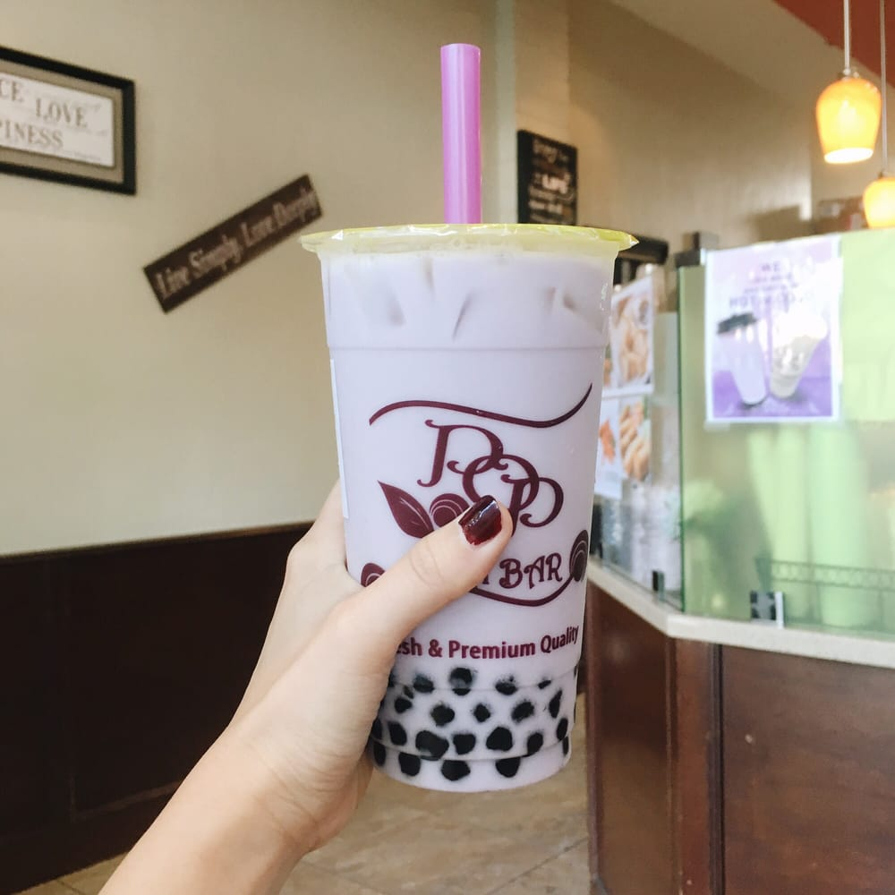

456 Cambridge Ave, Palo Alto, CA
When your boba craving strikes, head over to Pop Tea Bar, a cute little bubble tea shop on Cambridge Avenue. The menu is your standard bubble tea fare with nothing too adventurous on the menu -- no bubble tea floats, for example -- but the tapioca is fresh, the service is fast, and the tea is smooth and delicious! They have little bites to eat too, like popcorn chicken and eggrolls, in perfect snack-size portions. There's not too much seating, but there's a cute outdoor area in the back for warmer days.
Pop Tea Bar isn't exactly on campus, but the Marguerite has got you covered. Ride the 1050A to California and El Camino and it's a short walk from there. (11 minutes total from the Gates Computer Science Building!)
Recommendation: Classic Milk Tea with tapioca + an order of popcorn chicken.

459 Lagunita Dr, Stanford, CA
I can't tell you whether CoHo has a particularly amazing Vanilla Bean Latte, only because CoHo is the only place I've ever ordered a Vanilla Bean Latte from. I'm not even totally sure I know what a Vanilla Bean Latte is supposed to taste like. What I do know is the Vanilla Bean Latte I ordered on a whim from CoHo was delicious.
Recommendation: Vanilla Bean Latte
318 Campus Drive, Stanford, CA
Nexus Cafe has a lot of tasty things packed into its cafeteria space, including agua fresca! Grab a cup of this fresh and fruity beverage before you head to the check out line. Nexus Cafe has plenty of indoor and outdoor seating, too, so on the next sunny day, take a break on the patio with a cup of agua fresca, and maybe a burrito.
Recommendation: Agua Fresca